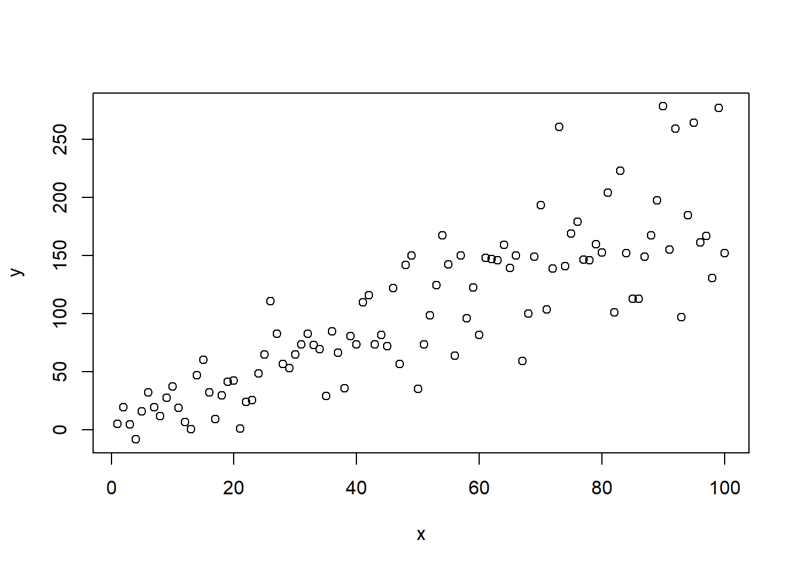
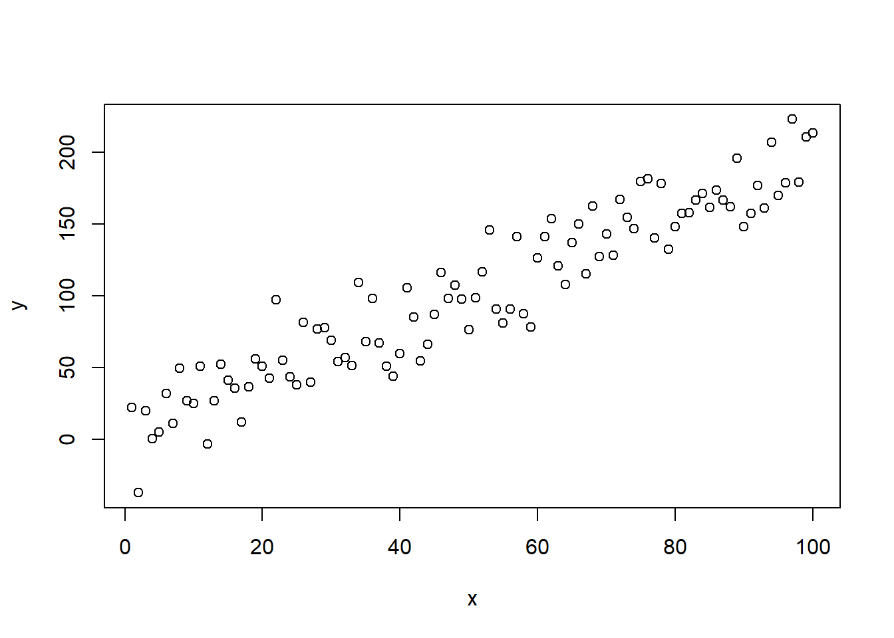
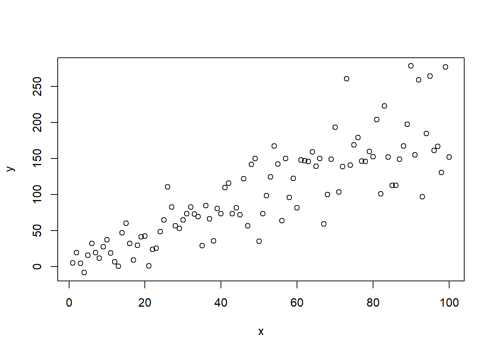
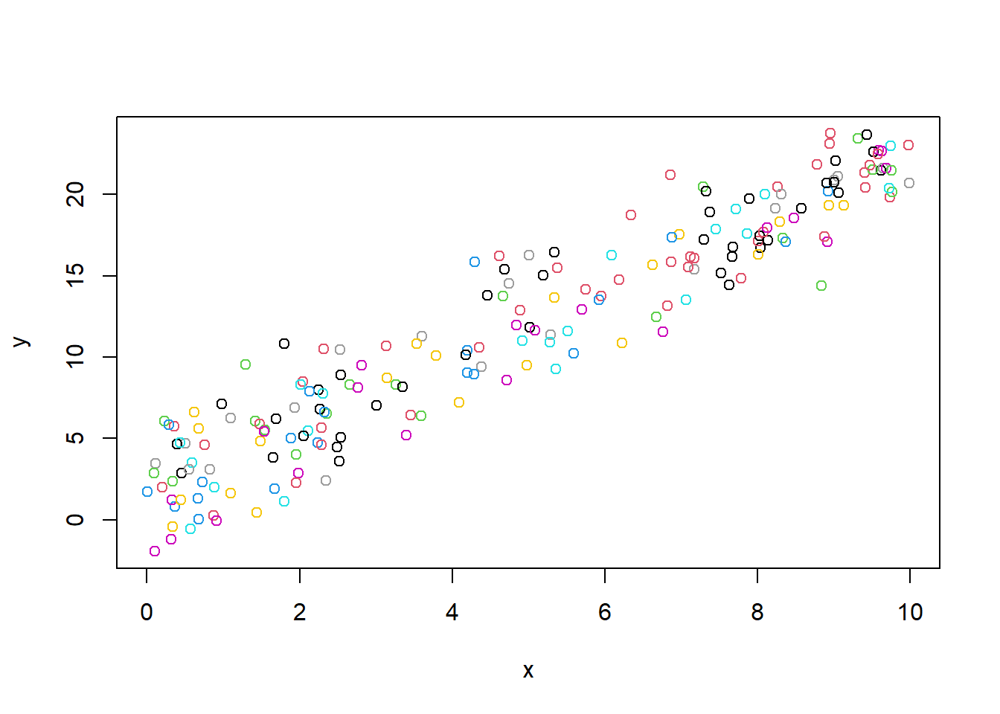

x = seq(1,100,length.out = 100)
y = 2 + 2 * x + rnorm(100,0,sqrt(20*x^1))
plot(y~x)
dat = data.frame(x,y)You will learn how to:
Estimate the parameters of a model with the variance varying as a function of a covariate (gls)
Apply mixed effect models to data with nested structures
It is common to observe that the variance of your data is not constant along your predictor \(x\). In case of the Poisson distribution, the relationship between the mean and the variance is fixed through \(\lambda\). For other probability distributions with \(\geq2\) parameters the variance can be modelled (somewhat) independent of the mean. A classic example is the normal distribution with \(mu\) equal to the mean of the distribution and \(\sigma\) to the square root of the variance. Traditionally, when the variance increases with \(x\) log transformations are applied. However, the variance can also be modelled explicitly. The purpose of this exercise is to give you insight how this can done (by showing a simple but wrong approach), followed by the correct, but canned approach gls in R.
To illustrate the principle, we generate data from scratch first with constant variance: ::: {.cell}
x = seq(1,100,length.out = 100)
y = 2 + 2 * x + rnorm(100,0,20)
plot(y~x)
:::
Now we let the variance increase linearly with \(x\). Note that the rnorm takes the standard deviation, hence the \(\sqrt(20x)\)
x = seq(1,100,length.out = 100)
y = 2 + 2 * x + rnorm(100,0,sqrt(20*x^1))
plot(y~x)
dat = data.frame(x,y) nll = function(par,dat){
y.mean = par[1] + par[2]*dat$x
nll = -sum(dnorm(dat$y,y.mean,sd=par[3],log=T))
return(nll)
}
par = c(2,2,2)
opt1= optim(par,fn=nll,dat=dat)
nll2 = function(par,dat){
y.mean = par[1] + par[2]*dat$x
nll = -sum(dnorm(dat$y,y.mean,sd=sqrt(par[3]*dat$x^par[4]),log=T))
return(nll)
}
par = c(2,2,2,1)
opt2= optim(par,fn=nll2,dat=dat) 2*3+2*opt1$value
2*4+2*opt2$valuegls (from the package nlme), see below the R-script. Do the values of the gls.2 correspond to the values that were obtained through the Bolker approach? To understand the differences, look careful at 1) the residual standard error of the gls (how does this compare to the variance?), 2) the equation of varPower (see Zuur), 3) and how the data was generated. To fit the models you can type:library(nlme)
gls.1 = gls(y~x, data=dat,method="ML")
summary(gls.1)
# to specify the variance as a function of x we can use different functions
# (see chapter 4 of Zuur for details) or see ?varClasses
gls.2 = gls(y~x, weights=varPower(form=~x), data=dat,method="ML")
summary(gls.2)
AIC(gls.1,gls.2)method=REML is the default in gls). With restricted maximumlikelihood you account for the fact that you need estimate the mean from the data. Since the esimated mean will be slightly different than the true mean, the estimated variance is also slightly different from the true variance (i.e. \(\sigma^2=\sum_{i=1}^{N}(y_i-\mu)^2\)). Thus the mean itself is an estimate from the data (i.e. \(\bar{y}\)) and not the population parameter itself (i.e. \(\mu\)). Thus you should fit models with REML when applying AIC. Which model fits the data better?An important assumption of the models we have discussed so far (linear models, generalized linear models and generalized least squares models) is that the observations are independent of each other. This assumptions is often violated in ecological data. The solution for the lack of independence is to model the data with so called mixed effect models. Mixed effect models contain a fixed part and a random part (see Zuur for more information). To understand how mixed effect models work, we will generate data ourselves and backfit the coefficients with a mixed effect model:
\[Y_{i,j} = \alpha+\beta x + b_{i}+\epsilon_{j}\] with \(b_{i} \sim N(0,\sigma_{site})\)
with \(\epsilon_{j} \sim N(0,\sigma_{res})\)
We can simulate data as follows:
x = runif(200,0,10) # this is the covariate
sigma_site = 1
site = rnorm(10,0,sigma_site) # we construct 10 different sites
id = as.factor(rep(c(1:10),20)) # site id
sigma_res = 2
y = 2+ 2*x + site[id] + rnorm(200,0,sigma_res)
dat= data.frame(x,y,id)
# let's make a plot
plot(y ~x,col=id)
Now let’s fit a mixed effect model with a random intercept across sites:
library(nlme)
lme.1 = lme(y ~ x, random=~1|id,data=dat)
summary(lme.1)lme.1. Do the values of the random effects make sense? And do the values of the fixed part make sense?Let’s plot the fitted lines for each site:
library(ggplot2)
dat$fit.site = fitted(lme.1,level=1)
dat$fit.main = fitted(lme.1,level=0)
ggplot(data=dat) +
geom_point(aes(x=x,y=y,colour=id))+
geom_line(aes(x=x,y=fit.site,colour=id))+
geom_line(aes(x=x,y=fit.main),size=2)ctrl <- lmeControl(opt='optim'), and add control=ctrl to the lme function, i.e. lme(y~x..,control=ctrl). x = runif(200,0,10) # this is the covariate
sigma_site = 1
site = rnorm(10,0,sigma_site) # we construct 10 different sites
id = as.factor(rep(c(1:10),20)) # site id
sigma_res = 2
y = 2+ (2+site[id])*x + site[id] + rnorm(200,0,sigma_res)
dat= data.frame(x,y,id)
# let's make a plot
plot(y ~x,col=id)
lme.2 = lme(y ~ x, random=~x|id,data=dat,control=ctrl)
summary(lme.2)
library(ggplot2)
dat$fit.site = fitted(lme.2,level=1)
dat$fit.main = fitted(lme.2,level=0)
ggplot(data=dat) +
geom_point(aes(x=x,y=y,colour=id))+
geom_line(aes(x=x,y=fit.site,colour=id))+
geom_line(aes(x=x,y=fit.main),size=2)